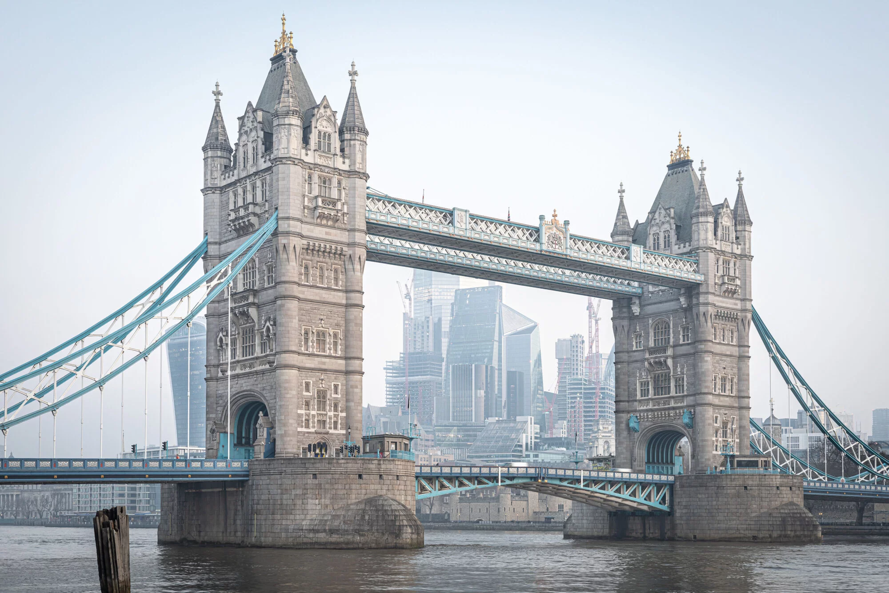
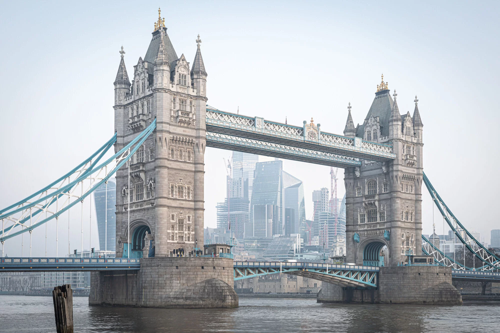

The City of London, also known as the City, is a city, ceremonial county and local government district that contains the ancient centre, and constitutes, along with Canary Wharf, the primary central business district (CBD) of London and one of the leading financial centres of the world. It constituted most of London from its settlement by the Romans in the 1st century AD to the Middle Ages, but the modern area referred to as London has since grown far beyond the City of London boundary. The City is now only a small part of the metropolis of Greater London, though it remains a notable part of central London. The City of London is not one of the London boroughs, a status reserved for the other 32 districts (including Greater London's only other city, the City of Westminster). It is also a separate ceremonial county, being an enclave surrounded by the ceremonial county of Greater London, and is the smallest ceremonial county in England.
 
The City of London is known colloquially as the Square Mile, as it is 1.12 sq mi (716.80 acres; 2.90 km2) in area. Both the terms the City and the Square Mile are often used as metonyms for the UK's trading and financial services industries, which continue a notable history of being largely based in the City. The name London is now ordinarily used for a far wider area than just the City. London most often denotes the sprawling London metropolis, or the 32 Greater London boroughs, in addition to the City of London itself. The local authority for the City, the City of London Corporation, is unique in the UK and has some unusual responsibilities for a local council, such as being the police authority, and in having responsibilities and ownerships beyond its boundaries, e.g. Hampstead Heath. The corporation is headed by the Lord Mayor of the City of London (an office separate from, and much older than, the Mayor of London). The current Lord Mayor is Alastair King. The City is made up of 25 wards, with administration at the historic Guildhall.